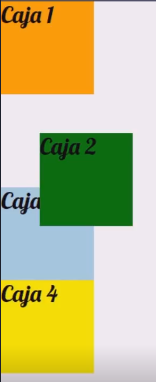
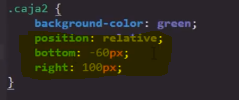
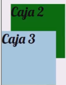
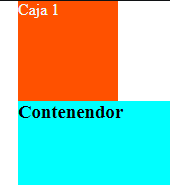
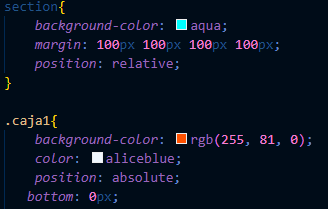
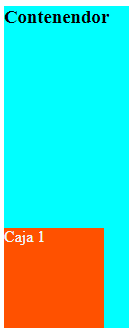

Esta es una propiedad de gran inportancia en CSS, nos permite determinar la posición e la que se ubicara uno o más elementos en un contenedor, esta propiedad cuenta con diversos valores, cada uno con su propio efecto y particularidades:
Valores
Static
-
Este se trata del valor por defecto de los elementos HTML, basicamente su balor es nulo, ya que le indica añ navegador que el elemento no se encuenta posicionado.
Relative
-
Este segundo valor posee posee una mecanica intenresante, permite desplazar algun elemento sin que este pierda su espacio designado, recordmos que todos los elementos HTML tiene un lugar designado por defecto, ya sea arriba, alado o debajo de otro, el efecto de esta propuedad es que se puede desplazar el elemento por el eje X y el eje Y, a la vez que este continua conservando su espacio designado
Ejemplo
Como se puede apreciar en este ejemplo la caja uno se encuentra desplzada a la derecha y hacia abajo, sin embargo el espacio designado por defecto para ella le siguie perteneciendo.
Funcionamiento
Al aplicarse el valor relative el elemento en cuestión adquiere la capacidad de utilizar cinco nuevas propiedades para desplazar el elemento:
- Top
- Bottom
- Left
- Right
- z-index
Eje Y
Eje X
Eje Z
Desplazamiento en eje X y Y
Para desplazar el elementos hay que tener en cuanta que el punto de partida es el espacio asignado por defecto al elemento, a la vez que esta propiedad le brinda prirodad al valor de left y top, por lo que lo comun es utilizar unicamente estos valores, si se incluye right o a botton junta a left y top estos simplemente seran ignorados.
Nota: El objetivo de estas propiedades es distanciar el elemento de su respectiva dirección por ello el efecto es inverso al nombre de la propiedad, al darle un valor a izquierda se desplaza a la derecha.
Ejemplo
Desplazamiento en el eje Z
El desplazamiento en el eje Z se adqiere al posicionar los elemtos, por lo que un elemento que no posea la propieda position no podra hacer uso de esta.
Al posicionarse un elemento su valor por defecto es "0", no obstante una caracteritica del flujo de presentación de los elementos en HTML es que los ultimos elementos tiene una mayor gerarquia en el eje Z que los primeros, por lo tanto si se diese el caso de que dos elementos posicionados se sobreponen el el ultimo elmento en declararse se mostraria por encima del otro, todo esto por defecto.
Para modificar este flujo de presentación de elementos es necesario asignarle un valor numerico a la propiedad z-index, esta propiedad mostrara por encima el elemento con el mayor valor.
Nota: Una buena practica es la de definir que el aumento de valor de los elemtos sea como minimo en 10 en 10 o más, esto con el fin de tener un margen númerico con el que podamos ubicar futuros elementos de ser necesario.
Conflicto de contenedores padres e hijos
Por lo general es imposible ubicar al cotenedor por encima del su respectivo elemento hijo, ya que este se encuentra dentro, sin importanr el valor de z-index que se le atribuya el contenedor nunca se ubicara por encima del elementos hijo, salvo si se recurre a un limbo en el codigo.
De ser necesario se puede producir este agujero haciendo lo siguiete:
Se posicionan tanto el elemento padre com el hijo (se aplica el valor relative en la propiedad position )
No se define la propiedad z-index en el elemento padre
Se define el valor de "-1" en z-index en el elemento hijo
Esta es la unica forma de lograr que el contenedor se ubique por encima de su respectivo elemento hijo.
Absolute
-
El efecto de este valor es muy similar a relative, sin embargo existen tres diferencias notorias:
-
Al posicionar el elemento con este valor el espacio designado para este se vacia, por lo que el navegador utilizara ese espacio para otro elemento, en otras palabras el piede su espacio designado y se podria desir que se vuelve un elemento "flotante", ya que no posee un espacio respecto a otros elementos.
-
Uno de los efectos del valor absolute es que por defecto los elementos que esten posicionados de esta forma sus dimenciones de ajustaran a su contenido, para evitar esto es necesario declarar su tamaño con los atributos width y height
-
Ya que en este tipo de posicionamiento no se conserva el espacio recervado del elemento este no se puede utilizar como referencia para defibir la posición del elemento, en este caso se utulizan dos cosas:
-
El Viewport: Se trata del espacio de pantalla en el que se visualiza la paguina, los elementos se guían por este en los casos en los que no se enceuentren en un contenedor o que se defina manualemente el uso de las propiedades Top , left, right y botton, en cuyo caso el elemento ignorara el contenedor y se ubicara en referencia al viewport de esta forma:
 -
El Contenedor: La posición por defecto de los elementos se calcula en referencia a su contenendor, sin mebargo tal como se a indicado anteriormente, si se esepesifica la posición de los elementos de forma manual con el uso de las propiedades Top , left, right y botton, entonces los elementos ignoran al contenedor, para evitar esto es necesario que este se encuentre a su vez posicionado con el valor relative, de este modo se podra definir la posición de los elementos en base a su contenedor
Este codigo:
Resulta en esto:
Dentro del contenedor la posición inical de todos los elementos es en la esquina superior izquierda, esto es igual a un valor de top: 0px; y de left: 0px;
-
Centrar elementos con Absolute
Para esto es necesario definirlo con un valor de "0px" en las cuatro propiedades: Top , left, right y botton y añadir un margin: auto;, de ese modo el navegador al no poder elegir a donde envarlo lo desplazara a la mitad exacta y ajustara el valor del margen para compensar las dimenciones del contenedor o viewport, de este modo se mantendra centrado sin importar las dimenciones o caracteriticas de la pantalla desde la que se visualise.
-
Fixed
-
El valor Fixed realmente es muy paracido a Absolute, con una unica diferencia, una vez el elemento pierde su espacio reservado y pasa a ser un elemento "flotante" este quedara fijo en la pantall, en la posición indicada por los valores Top , left, right y botton.
El punto de este tipo de elemtos es emplearlos en menus, navegación, publicidades etc, se aplican para quellos elementos que no se desea que se pierdan de visra, si no que se desplazen junto con el usuario por la paguina
Un especto a tener en cuenta de su funcionamiento es que al igual de absolute Fixed pueden cubrir a otros elementos ya que al no ocupar espacio en pantalla el navegador utiliza ese espacio para otros elementos que se encuentren en el flujo de presentación, para solucionar esto existen multiples formas de impedir que los elementos se sobrepongan, una de las más simples consiste en:
Asignar al elemento body del documento un padding-top para desplazar a todos los elemtos cierta distancia hacia abajo
Seguido a esto se asigna un marguin-top: negativo al elemento Fixed,para que de ese modo este se desplase hacia arriba y sea el unico elemento del body en esa harea
De ese modo el elemento Fixed no cubrira el contenido de la paguina y se desplazara junto con el usuario por la paguina web.
sticky
-
Este se trata del valor más reciente inplementado por CSS, su funcionamiento es una mescla de fixed y de relative, ya que una vez posicionado mantiene su espacio designado en el flujo de presentación y se visualiza como un elemento común, con una gran diferencia, este elemento aprovecha el desplazamiento del usuario por la paguina, una vez el usuario se desplaze verticalmente y el elemento sticky alcanse la posición definida por los valores top o bottom este se anclara allí y se desplazara con el usuario
En otras palabras este elemento se desplaza con normalidad hasta que alcanza la posición definda, de allí en más el elemento se desplazara en conjunto con el usuario, si el usuario retorna, el elemento lo hara con el, y si alcanza nuevamente su espacio designado este se anclara allí volviendo a su posición inicial y dejando de seguir al usuario.
Nota: Si los valores top y bottom no son declarados este elemento no se comportara de ninguna forma en especial.